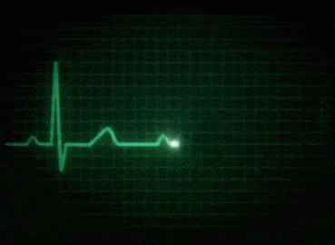
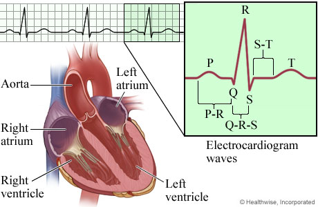

What is ECG
심전도(Elctrocardiogram, ECG/EKG)
는 정해진 시간에 심장의 전기적 활동을 해석하는것.
심전도는 심장의 박동시 발생되는 미세전류를 측정해서 얻어진 신호임.
심전도는 전형적인 파동의 패턴을 가지고 있으며 P파,Q파,R파,S파,T파 로 구분함.
심전도를 얻기 위해서는 전극을 환자의 팔, 다리와 가슴에 올려 놓고 심장이 박동할 때마다 심장에서 발생되는 전류의 크기와 방향을 측정해서 얻음.
심전도의 각각의 파형을 분석하여 심장마비(심근경색), 비정상적인 심장 박동(부정맥), 심장에 혈액 및 산소의 부적절한 공급(허혈), 두꺼운 심장 근육벽(비대증) 등을 판단함.
심전도의 심장박동변화를 통해 심장질환(혈류연계 질환)을 판단함.
Typical example of ECG signal
 
ECG monitoring device